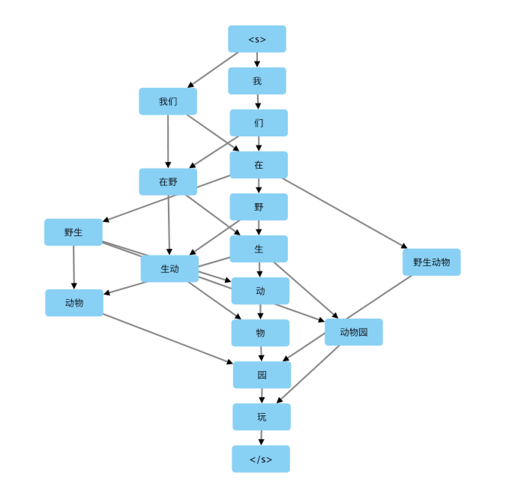

<!DOCTYPE html>


  


<html class="theme-next mist use-motion" lang="zh-Hans,en,default">
<head><meta name="generator" content="Hexo 3.9.0">
  <meta charset="UTF-8">
<meta http-equiv="X-UA-Compatible" content="IE=edge">
<meta name="viewport" content="width=device-width, initial-scale=1, maximum-scale=2">
<meta name="theme-color" content="#222">


<link rel="stylesheet" href="/lib/font-awesome/css/font-awesome.min.css?v=4.7.0">

<link rel="stylesheet" href="/css/main.css?v=7.2.0">


  <link rel="apple-touch-icon" sizes="180x180" href="/images/apple-touch-icon-next.png?v=7.2.0">


  <link rel="icon" type="image/png" sizes="32x32" href="/images/favicon-32x32-next.png?v=7.2.0">


  <link rel="icon" type="image/png" sizes="16x16" href="/images/favicon-16x16-next.png?v=7.2.0">


  <link rel="mask-icon" href="/images/logo.svg?v=7.2.0" color="#222">


<script id="hexo.configurations">
  var NexT = window.NexT || {};
  var CONFIG = {
    root: '/',
    scheme: 'Mist',
    version: '7.2.0',
    sidebar: {"position":"left","display":"post","offset":12,"onmobile":false,"dimmer":false},
    back2top: true,
    back2top_sidebar: false,
    fancybox: false,
    fastclick: false,
    lazyload: false,
    tabs: true,
    motion: {"enable":true,"async":false,"transition":{"post_block":"fadeIn","post_header":"slideDownIn","post_body":"slideDownIn","coll_header":"slideLeftIn","sidebar":"slideUpIn"}},
    algolia: {
      applicationID: '',
      apiKey: '',
      indexName: '',
      hits: {"per_page":10},
      labels: {"input_placeholder":"Search for Posts","hits_empty":"We didn't find any results for the search: ${query}","hits_stats":"${hits} results found in ${time} ms"}
    }
  };
</script>


  


  <meta name="description" content="将所有可能的分词结果按照词语构建成一个有向无环图，寻找其中联合概率最大的路径。">
<meta property="og:type" content="article">
<meta property="og:title" content="构建中文分词器 - 有向无环图法">
<meta property="og:url" content="https://blog.xiaoquankong.ai/构建中文分词器-有向无环图法/index.html">
<meta property="og:site_name" content="Howl&#39;s">
<meta property="og:description" content="将所有可能的分词结果按照词语构建成一个有向无环图，寻找其中联合概率最大的路径。">
<meta property="og:locale" content="zh-Hans">
<meta property="og:image" content="https://blog.xiaoquankong.ai/构建中文分词器-有向无环图法/DAG.png">
<meta property="og:updated_time" content="2018-08-16T13:50:05.986Z">
<meta name="twitter:card" content="summary">
<meta name="twitter:title" content="构建中文分词器 - 有向无环图法">
<meta name="twitter:description" content="将所有可能的分词结果按照词语构建成一个有向无环图，寻找其中联合概率最大的路径。">
<meta name="twitter:image" content="https://blog.xiaoquankong.ai/构建中文分词器-有向无环图法/DAG.png">


  <link rel="alternate" href="/atom.xml" title="Howl's" type="application/atom+xml">


  
  
  <link rel="canonical" href="https://blog.xiaoquankong.ai/构建中文分词器-有向无环图法/">


<script id="page.configurations">
  CONFIG.page = {
    sidebar: "",
  };
</script>

  <title>构建中文分词器 - 有向无环图法 | Howl's</title>
  


  <script async src="https://www.googletagmanager.com/gtag/js?id=UA-105150423-2"></script>
  <script>
    var host = window.location.hostname;
    if (host !== "localhost" || !true) {
      window.dataLayer = window.dataLayer || [];
      function gtag(){dataLayer.push(arguments);}
      gtag('js', new Date());
      gtag('config', 'UA-105150423-2');
    }
  </script>


  <noscript>
  <style>
  .use-motion .motion-element,
  .use-motion .brand,
  .use-motion .menu-item,
  .sidebar-inner,
  .use-motion .post-block,
  .use-motion .pagination,
  .use-motion .comments,
  .use-motion .post-header,
  .use-motion .post-body,
  .use-motion .collection-title { opacity: initial; }

  .use-motion .logo,
  .use-motion .site-title,
  .use-motion .site-subtitle {
    opacity: initial;
    top: initial;
  }

  .use-motion .logo-line-before i { left: initial; }
  .use-motion .logo-line-after i { right: initial; }
  </style>
</noscript>

</head>

<body itemscope itemtype="http://schema.org/WebPage" lang="zh-Hans">

  
  
    
  

  <div class="container sidebar-position-left page-post-detail">
    <div class="headband"></div>

    <header id="header" class="header" itemscope itemtype="http://schema.org/WPHeader">
      <div class="header-inner"><div class="site-brand-wrapper">
  <div class="site-meta">
    

    <div class="custom-logo-site-title">
      <a href="/" class="brand" rel="start">
        <span class="logo-line-before"><i></i></span>
        <span class="site-title">Howl's</span>
        <span class="logo-line-after"><i></i></span>
      </a>
    </div>
    
    
  </div>

  <div class="site-nav-toggle">
    <button aria-label="Toggle navigation bar">
      <span class="btn-bar"></span>
      <span class="btn-bar"></span>
      <span class="btn-bar"></span>
    </button>
  </div>
</div>


<nav class="site-nav">
  
    <ul id="menu" class="menu">
      
        
        
        
          
          <li class="menu-item menu-item-home">

    
    
      
    

    

    <a href="/" rel="section"><i class="menu-item-icon fa fa-fw fa-home"></i> <br>Home</a>

  </li>
        
        
        
          
          <li class="menu-item menu-item-about">

    
    
      
    

    

    <a href="/about/" rel="section"><i class="menu-item-icon fa fa-fw fa-user"></i> <br>About</a>

  </li>
        
        
        
          
          <li class="menu-item menu-item-tags">

    
    
      
    

    

    <a href="/tags/" rel="section"><i class="menu-item-icon fa fa-fw fa-tags"></i> <br>Tags</a>

  </li>
        
        
        
          
          <li class="menu-item menu-item-categories">

    
    
      
    

    

    <a href="/categories/" rel="section"><i class="menu-item-icon fa fa-fw fa-th"></i> <br>Categories</a>

  </li>
        
        
        
          
          <li class="menu-item menu-item-archives">

    
    
      
    

    

    <a href="/archives/" rel="section"><i class="menu-item-icon fa fa-fw fa-archive"></i> <br>Archives</a>

  </li>

      
      
    </ul>
  

  
    

  

  
</nav>


  


</div>
    </header>

    


    <main id="main" class="main">
      <div class="main-inner">
        <div class="content-wrap">
          
          <div id="content" class="content">
            

  <div id="posts" class="posts-expand">
    

  

  
  
  

  

  <article class="post post-type-normal" itemscope itemtype="http://schema.org/Article">
  
  
  
  <div class="post-block">
    <link itemprop="mainEntityOfPage" href="https://blog.xiaoquankong.ai/构建中文分词器-有向无环图法/">

    <span hidden itemprop="author" itemscope itemtype="http://schema.org/Person">
      <meta itemprop="name" content="Xiaoquan Kong">
      <meta itemprop="description" content>
      <meta itemprop="image" content="/images/avatar.gif">
    </span>

    <span hidden itemprop="publisher" itemscope itemtype="http://schema.org/Organization">
      <meta itemprop="name" content="Howl's">
    </span>

    
      <header class="post-header">

        
        
          <h1 class="post-title" itemprop="name headline">构建中文分词器 - 有向无环图法

              
            
          </h1>
        

        <div class="post-meta">

          
          
          

          
            <span class="post-meta-item">
              <span class="post-meta-item-icon">
                <i class="fa fa-calendar-o"></i>
              </span>
              
                <span class="post-meta-item-text">Posted on</span>
              

              
                
              

              <time title="Created: 2018-08-14 12:37:44" itemprop="dateCreated datePublished" datetime="2018-08-14T12:37:44+08:00">2018-08-14</time>
            </span>
          

          
            

            
              <span class="post-meta-item">
                <span class="post-meta-item-icon">
                  <i class="fa fa-calendar-check-o"></i>
                </span>
                
                  <span class="post-meta-item-text">Edited on</span>
                
                <time title="Modified: 2018-08-16 21:50:05" itemprop="dateModified" datetime="2018-08-16T21:50:05+08:00">2018-08-16</time>
              </span>
            
          

          

          
            
            
              
              <span class="post-meta-item">
                <span class="post-meta-item-icon">
                  <i class="fa fa-comment-o"></i>
                </span>
            
                <span class="post-meta-item-text">Comments: </span>
                <a href="/构建中文分词器-有向无环图法/#comments" itemprop="discussionUrl">
                  <span class="post-comments-count disqus-comment-count" data-disqus-identifier="构建中文分词器-有向无环图法/" itemprop="commentCount"></span>
                </a>
              </span>
            
          

          
          

          

          <br>
          

          

          

        </div>
      </header>
    

    
    
    
    <div class="post-body" itemprop="articleBody">

      
      

      
        <p>将所有可能的分词结果按照词语构建成一个有向无环图，寻找其中联合概率最大的路径。<br><a id="more"></a></p>
<h1 id="解释"><a href="#解释" class="headerlink" title="解释"></a>解释</h1><p>所需的语料是一个包含词语频率的字典。查找所有可能的分词结果可以通过查找字典中的词是否在一个字符串的开始位置来完成。</p>
<p>构建成有向无环图后，我们找出所有路径中联合概率（朴素观点为：各个词语概率相乘）最大的路径。但一般情况下图理论和图相关的库都是用来求解最短路径（所有路径中权重之和最小的路径），因此这里做数学上的变换，能够按照最小路径求解的方式，找到联合概率最大的路径。具体变动如下:</p>
<h2 id="使用-log-函数将求解相乘问题转换成相加问题"><a href="#使用-log-函数将求解相乘问题转换成相加问题" class="headerlink" title="使用 log 函数将求解相乘问题转换成相加问题"></a>使用 log 函数将求解相乘问题转换成相加问题</h2><figure class="highlight plain"><table><tr><td class="gutter"><pre><span class="line">1</span><br></pre></td><td class="code"><pre><span class="line">log(a * b) = log(a) + log(b)</span><br></pre></td></tr></table></figure>
<h2 id="使用倒数函数将求解最大问题变成求解最小问题"><a href="#使用倒数函数将求解最大问题变成求解最小问题" class="headerlink" title="使用倒数函数将求解最大问题变成求解最小问题"></a>使用倒数函数将求解最大问题变成求解最小问题</h2><figure class="highlight plain"><table><tr><td class="gutter"><pre><span class="line">1</span><br><span class="line">2</span><br><span class="line">3</span><br></pre></td><td class="code"><pre><span class="line">a &gt; b</span><br><span class="line">then</span><br><span class="line">1/a &lt; 1/b</span><br></pre></td></tr></table></figure>
<h1 id="示例"><a href="#示例" class="headerlink" title="示例"></a>示例</h1><p>以 <code>我们在野生动物园玩</code> 为例，假设我们的词典里只包含如下词汇</p>
<table>
<thead>
<tr>
<th>词汇</th>
<th>频数</th>
<th>概率</th>
<th>概率的倒数</th>
<th>log(概率的倒数)</th>
</tr>
</thead>
<tbody>
<tr>
<td>我们</td>
<td>30</td>
<td>0.30</td>
<td>3.3</td>
<td>1.19</td>
</tr>
<tr>
<td>在</td>
<td>40</td>
<td>0.40</td>
<td>2.5</td>
<td>3.69</td>
</tr>
<tr>
<td>在野</td>
<td>2</td>
<td>0.02</td>
<td>50</td>
<td>3.91</td>
</tr>
<tr>
<td>野生动物园</td>
<td>8</td>
<td>0.08</td>
<td>12.5</td>
<td>2.53</td>
</tr>
<tr>
<td>物</td>
<td>1</td>
<td>0.01</td>
<td>100</td>
<td>4.61</td>
</tr>
<tr>
<td>园</td>
<td>1</td>
<td>0.01</td>
<td>100</td>
<td>4.61</td>
</tr>
<tr>
<td>玩</td>
<td>18</td>
<td>0.18</td>
<td>5.6</td>
<td>1.72</td>
</tr>
</tbody>
</table>
<p><em>NOTE</em> : <code>log</code> 函数在这里是以自然对数 <code>e</code> 为低的，等同于函数 <code>ln</code></p>
<p>从 <code>我们在野生动物园玩</code> 开始，扫描词汇表，找到匹配的前缀词汇。</p>
<ol>
<li>第一轮找到词汇 <code>我们</code>，剩余未分词字符串为 <code>在野生动物园玩</code></li>
<li>第二轮找到词汇 <code>在</code> 和 <code>在野</code>，剩余未分词字符串为 <code>野生动物园玩</code> 和 <code>生动物园玩</code></li>
<li>第三轮则对上面两个未分词字符串，应用相同的规则分词，得到词汇 <code>野生动物园</code> 和 <code>生动</code></li>
<li>如此重复直到所有的未分词字符串为空。</li>
</ol>
<p>经过上述步骤，我们得到两种分词可能</p>
<ol>
<li><code>我们</code> / <code>在</code> / <code>野生动物园</code> / <code>玩</code></li>
<li><code>我们</code> / <code>在野</code> / <code>生动</code> / <code>物</code> / <code>园</code> / <code>玩</code></li>
</ol>
<p>添加开始节点 <code>&lt;start&gt;</code> 和 结束节点 <code>&lt;end&gt;</code> 后，我们可以构建一个 <code>有向无环图</code>, 节点之间的边的权重为上一个节点对应的 <code>log(概率的倒数)</code>。</p>
<p>则得到类似如下的有向无环图：</p>
<p></p>
<p>通过求解最小路径的方法可以得到最短路径为 <code>我们</code> / <code>在</code> / <code>野生动物园</code> / <code>玩</code></p>
<h1 id="局限"><a href="#局限" class="headerlink" title="局限"></a>局限</h1><p>因为基于词典，因此不具备新词发现的能力，同时也很难处理歧义问题。</p>

      
    </div>

    

    
    
    

    

    
      
    
    

    

    <footer class="post-footer">
      

      
      
      

      
        <div class="post-nav">
          <div class="post-nav-next post-nav-item">
            
              <a href="/构建中文分词器-双向最大匹配法/" rel="next" title="构建中文分词器 - 双向最大匹配法">
                <i class="fa fa-chevron-left"></i> 构建中文分词器 - 双向最大匹配法
              </a>
            
          </div>

          <span class="post-nav-divider"></span>

          <div class="post-nav-prev post-nav-item">
            
              <a href="/构建中文分词器-隐马尔科夫模型/" rel="prev" title="构建中文分词器 - 隐马尔科夫模型">
                构建中文分词器 - 隐马尔科夫模型 <i class="fa fa-chevron-right"></i>
              </a>
            
          </div>
        </div>
      

      
      
    </footer>
  </div>
  
  
  
  </article>


  </div>


          </div>
          

  
    <div class="comments" id="comments">
      <div id="disqus_thread">
        <noscript>Please enable JavaScript to view the comments powered by Disqus.</noscript>
      </div>
    </div>

  


        </div>
        
          
  
  <div class="sidebar-toggle">
    <div class="sidebar-toggle-line-wrap">
      <span class="sidebar-toggle-line sidebar-toggle-line-first"></span>
      <span class="sidebar-toggle-line sidebar-toggle-line-middle"></span>
      <span class="sidebar-toggle-line sidebar-toggle-line-last"></span>
    </div>
  </div>

  <aside id="sidebar" class="sidebar">
    <div class="sidebar-inner">

      

      
        <ul class="sidebar-nav motion-element">
          <li class="sidebar-nav-toc sidebar-nav-active" data-target="post-toc-wrap">
            Table of Contents
          </li>
          <li class="sidebar-nav-overview" data-target="site-overview-wrap">
            Overview
          </li>
        </ul>
      

      <div class="site-overview-wrap sidebar-panel">
        <div class="site-overview">
          <div class="site-author motion-element" itemprop="author" itemscope itemtype="http://schema.org/Person">
            
              <p class="site-author-name" itemprop="name">Xiaoquan Kong</p>
              <div class="site-description motion-element" itemprop="description"></div>
          </div>

          
            <nav class="site-state motion-element">
              
                <div class="site-state-item site-state-posts">
                
                  <a href="/archives/">
                
                    <span class="site-state-item-count">40</span>
                    <span class="site-state-item-name">posts</span>
                  </a>
                </div>
              

              
                
                
                <div class="site-state-item site-state-categories">
                  
                    
                      <a href="/categories/">
                    
                  
                    
                    
                      
                    
                      
                    
                      
                    
                      
                    
                      
                    
                      
                    
                      
                    
                      
                    
                    <span class="site-state-item-count">7</span>
                    <span class="site-state-item-name">categories</span>
                  </a>
                </div>
              

              
                
                
                <div class="site-state-item site-state-tags">
                  
                    
                      <a href="/tags/">
                    
                  
                    
                    
                      
                    
                      
                    
                      
                    
                      
                    
                      
                    
                      
                    
                      
                    
                      
                    
                      
                    
                      
                    
                      
                    
                      
                    
                      
                    
                      
                    
                      
                    
                      
                    
                      
                    
                      
                    
                      
                    
                      
                    
                      
                    
                      
                    
                      
                    
                      
                    
                      
                    
                      
                    
                      
                    
                      
                    
                      
                    
                      
                    
                      
                    
                      
                    
                      
                    
                      
                    
                    <span class="site-state-item-count">27</span>
                    <span class="site-state-item-name">tags</span>
                  </a>
                </div>
              
            </nav>
          

          
            <div class="feed-link motion-element">
              <a href="/atom.xml" rel="alternate">
                <i class="fa fa-rss"></i>
                RSS
              </a>
            </div>
          

          

          
            <div class="links-of-author motion-element">
              
                <span class="links-of-author-item">
                  
                  
                    
                  
                  
                    
                  
                  <a href="https://github.com/howl-anderson" title="GitHub &rarr; https://github.com/howl-anderson" rel="noopener" target="_blank"><i class="fa fa-fw fa-github"></i>GitHub</a>
                </span>
              
                <span class="links-of-author-item">
                  
                  
                    
                  
                  
                    
                  
                  <a href="https://www.linkedin.com/in/xiaoquankong/" title="Linkedin &rarr; https://www.linkedin.com/in/xiaoquankong/" rel="noopener" target="_blank"><i class="fa fa-fw fa-linkedin"></i>Linkedin</a>
                </span>
              
            </div>
          

          

          
          

          
            
          
          

        </div>
      </div>

      
      <!--noindex-->
        <div class="post-toc-wrap motion-element sidebar-panel sidebar-panel-active">
          <div class="post-toc">

            
            
            
            

            
              <div class="post-toc-content"><ol class="nav"><li class="nav-item nav-level-1"><a class="nav-link" href="#解释"><span class="nav-number">1.</span> <span class="nav-text">解释</span></a><ol class="nav-child"><li class="nav-item nav-level-2"><a class="nav-link" href="#使用-log-函数将求解相乘问题转换成相加问题"><span class="nav-number">1.1.</span> <span class="nav-text">使用 log 函数将求解相乘问题转换成相加问题</span></a></li><li class="nav-item nav-level-2"><a class="nav-link" href="#使用倒数函数将求解最大问题变成求解最小问题"><span class="nav-number">1.2.</span> <span class="nav-text">使用倒数函数将求解最大问题变成求解最小问题</span></a></li></ol></li><li class="nav-item nav-level-1"><a class="nav-link" href="#示例"><span class="nav-number">2.</span> <span class="nav-text">示例</span></a></li><li class="nav-item nav-level-1"><a class="nav-link" href="#局限"><span class="nav-number">3.</span> <span class="nav-text">局限</span></a></li></ol></div>
            

          </div>
        </div>
      <!--/noindex-->
      

      

    </div>
  </aside>
  


        
      </div>
    </main>

    <footer id="footer" class="footer">
      <div class="footer-inner">
        <div class="copyright">&copy; 2015 – <span itemprop="copyrightYear">2020</span>
  <span class="with-love" id="animate">
    <i class="fa fa-user"></i>
  </span>
  <span class="author" itemprop="copyrightHolder">Xiaoquan Kong</span>

  

  
</div>


        


        
      </div>
    </footer>

    
      <div class="back-to-top">
        <i class="fa fa-arrow-up"></i>
        
      </div>
    

    

    

    
  </div>

  

<script>
  if (Object.prototype.toString.call(window.Promise) !== '[object Function]') {
    window.Promise = null;
  }
</script>


  
  <script src="/lib/jquery/index.js?v=3.4.1"></script>

  
  <script src="/lib/velocity/velocity.min.js?v=1.2.1"></script>

  
  <script src="/lib/velocity/velocity.ui.min.js?v=1.2.1"></script>


  


  <script src="/js/utils.js?v=7.2.0"></script>

  <script src="/js/motion.js?v=7.2.0"></script>


  
  


  <script src="/js/schemes/muse.js?v=7.2.0"></script>


  
  <script src="/js/scrollspy.js?v=7.2.0"></script>
<script src="/js/post-details.js?v=7.2.0"></script>


  


  <script src="/js/next-boot.js?v=7.2.0"></script>


  

  

  

  
  
<script>
  function loadCount() {
    var d = document, s = d.createElement('script');
    s.src = 'https://blog-xiaoquankong-ai.disqus.com/count.js';
    s.id = 'dsq-count-scr';
    (d.head || d.body).appendChild(s);
  }
  // defer loading until the whole page loading is completed
  window.addEventListener('load', loadCount, false);
</script>


<script>
  var disqus_config = function() {
    this.page.url = "https://blog.xiaoquankong.ai/构建中文分词器-有向无环图法/";
    this.page.identifier = "构建中文分词器-有向无环图法/";
    this.page.title = '构建中文分词器 - 有向无环图法';
    };
  function loadComments() {
    var d = document, s = d.createElement('script');
    s.src = 'https://blog-xiaoquankong-ai.disqus.com/embed.js';
    s.setAttribute('data-timestamp', '' + +new Date());
    (d.head || d.body).appendChild(s);
  }
  
    window.addEventListener('load', loadComments, false);
  
</script>


  


  


  

  

  
  

  
  

  
    
      <script type="text/x-mathjax-config">
  

  MathJax.Hub.Config({
    tex2jax: {
      inlineMath: [ ['$', '$'], ['\\(', '\\)'] ],
      processEscapes: true,
      skipTags: ['script', 'noscript', 'style', 'textarea', 'pre', 'code']
    },
    TeX: {
      
      equationNumbers: {
        autoNumber: 'AMS'
      }
    }
  });
  MathJax.Hub.Register.StartupHook('TeX Jax Ready', function() {
    MathJax.InputJax.TeX.prefilterHooks.Add(function(data) {
      if (data.display) {
        var next = data.script.nextSibling;
        while (next && next.nodeName.toLowerCase() === '#text') { next = next.nextSibling }
        if (next && next.nodeName.toLowerCase() === 'br') { next.parentNode.removeChild(next) }
      }
    });
  });
</script>

<script type="text/x-mathjax-config">
  MathJax.Hub.Queue(function() {
    var all = MathJax.Hub.getAllJax(), i;
    for (i = 0; i < all.length; i += 1) {
      document.getElementById(all[i].inputID + '-Frame').parentNode.className += ' has-jax';
    }
  });
</script>
<script src="//cdn.jsdelivr.net/npm/mathjax@2/MathJax.js?config=TeX-AMS-MML_HTMLorMML"></script>

    
  


  

  

  

  

  

  

  

  

  

  

  

</body>
</html>
